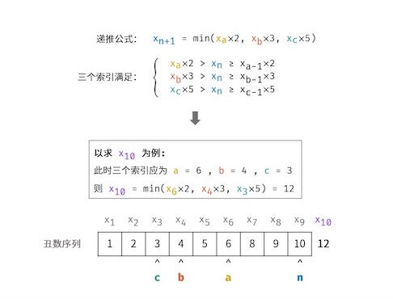
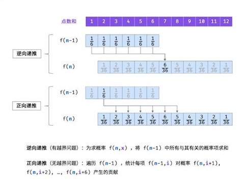

Authored by Tony Feng
Created on May 9th, 2022
Last Modified on May 9th, 2022
Task 1 - Q19. 正则表达式匹配
Question
请实现一个函数用来匹配包含'.'和'*'的正则表达式。模式中的字符'.'表示任意一个字符，而'*'表示它前面的字符可以出现任意次（含0次）。在本题中，匹配是指字符串的所有字符匹配整个模式。例如，字符串"aaa"与模式"a.a"和"ab*ac*a"匹配，但与"aa.a"和"ab*a"均不匹配。
Solution 1
1
2
3
4
5
6
7
8
9
10
11
12
13
14
15
16
17
|
class Solution: # Recursion
def isMatch(self, s: str, p: str) -> bool:
@lru_cache(None) # Optimize and improve the speed
def recur(i, j):
if j == len(p):
return i == len(s)
flag = i < len(s) and (s[i] == p[j] or p[j] == '.')
if j < len(p) - 1 and p[j+1] == '*':
'''
1) Ignore the character and '*'
2) Check if the next character matches p[j]
'''
return recur(i, j+2) or (flag and recur(i+1, j))
else:
return flag and recur(i+1, j+1)
return recur(0, 0)
|
Solution 2
1
2
3
4
5
6
7
8
9
10
11
12
13
14
15
16
17
18
19
20
21
22
23
24
25
26
27
28
29
30
31
32
33
34
35
36
37
38
39
40
41
42
43
44
45
46
47
|
class Solution: # DP
def isMatch(self, s: str, p: str) -> bool:
def match(charS: str, charP: str) -> bool:
'''当正则字符为‘.’，或二者字符相等时，返回True'''
return charP == '.' or charP == charS
# dp[i][j]表示 [正则串p的前i个字符] 能否配对成功 [目标串s的前j个字符]
# 为了更多的cache hit，我们将逐个遍历i，即逐个读入p串的字符
lenS, lenP = len(s), len(p)
dp = [[False] * (lenS+1) for _ in range(lenP+1)]
# 空字符配对空字符则必定成功
dp[0][0] = True
# 如果正则串为‘X*X*X*...’的形式，则其可配对空字符串
for i in range(1, lenP+1):
if p[i-1] == '*':
dp[i][0] = dp[i-2][0]
for i in range(1, lenP+1):
for j in range(1, lenS+1):
# 如果p新读入的字符是'*'，则需要比对'*'之前的字符与s的相应字符
if p[i-1] == '*':
# 1. 如果两个字符能够配对，我们用'X'表示这个字符，有两种情况：
# 1.1. 不使用'X*'，即p串除去'X*'的部分可以与s串配对，即dp[i-2][j]
# 1.2. 使用'X*'，因为我们已经确定'X'能够与s串的字符配对，因此，
# 只要p串之前的某一个字符与s串的这个字符配对成功过，之后'*'这行所有
# 能够配对的字符都能配对成功，dp[i][j-1]
# e.g. 'ab*' 只要与'abbbb...'在第三行第一列配对成功了，即'ab*'与'a'的dp[3][1]
# 之后对于所有'bbbbb...'，dp[3][...]都是True
if match(s[j-1], p[i-2]):
dp[i][j] = dp[i-2][j] or dp[i][j-1]
# 2. 如果两个字符配对不成功
# 2.1. 此时只有不使用'X*'一种方法能够使p,s配对，即dp[i-2][j]
else:
dp[i][j] = dp[i-2][j]
# 如果p新读入的不是'*'，就很简单了，只要[配对]且[二者上一个字符能够配对]就可以
else:
dp[i][j] = match(s[j-1], p[i-1]) and dp[i-1][j-1]
return dp[-1][-1]
|
Explanation
- Solution 1 & 2
- Time Complexity: O(M * N)
- Space Complexity: O(M * N)
Task 2 - Q49. 丑数
Question
我们把只包含质因子 2、3 和 5 的数称作丑数（Ugly Number）。求按从小到大的顺序的第 n 个丑数。
Solution
1
2
3
4
5
6
7
8
9
10
11
12
13
|
class Solution:
def nthUglyNumber(self, n: int) -> int:
dp, id2, id3, id5 = [1] * n, 0, 0, 0
for i in range(1, n):
n2, n3, n5 = dp[id2] * 2, dp[id3] * 3, dp[id5] * 5
dp[i] = min(n2, n3, n5)
if dp[i] == n2:
id2 += 1
if dp[i] == n3:
id3 += 1
if dp[i] == n5:
id5 += 1
return dp[-1]
|
Explanation
- Time Complexity: O(N)
- Space Complexity: O(N)

Task 3 - Q60. n个骰子的点数
Question
把n个骰子扔在地上，所有骰子朝上一面的点数之和为s。输入n，打印出s的所有可能的值出现的概率。你需要用一个浮点数数组返回答案，其中第 i 个元素代表这 n 个骰子所能掷出的点数集合中第 i 小的那个的概率。
Solution
1
2
3
4
5
6
7
8
9
10
|
class Solution:
def dicesProbability(self, n: int) -> List[float]:
dp = [1/6] * 6
for i in range(2, n+1): # i means the possible value of s
tmp = [0] * (6 * i - 1 * i + 1) # s is in the range n ~ 6n
for j in range(len(dp)):
for k in range(6):
tmp[j+k] += dp[j] * (1/6)
dp = tmp
return dp
|
Explanation
- Transition Function: $ f(n, x_{n})=\sum_{i=1}^{6} f(n-1, x_{n-1}+i) \times \frac{1}{6} $

- Time Complexity: O(N2)
- Space Complexity: O(N)